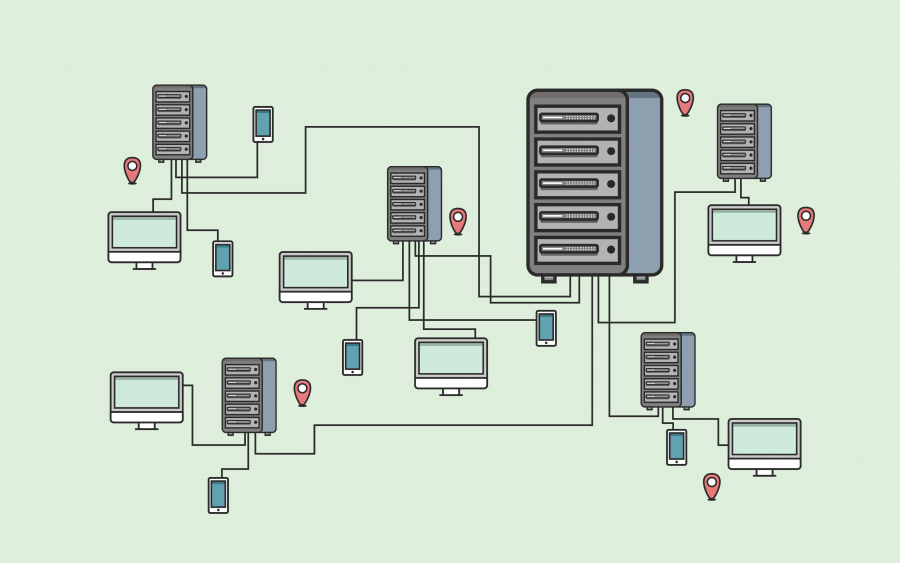
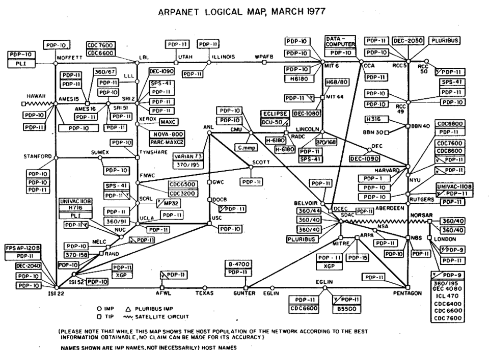
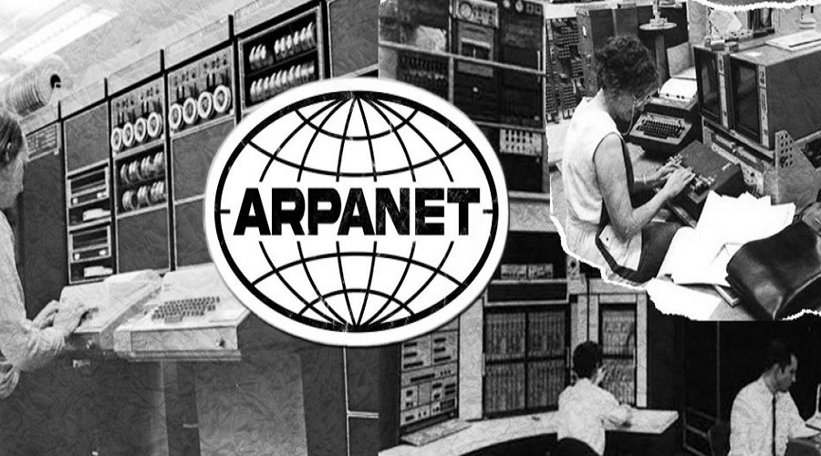

مقدمة في الشبكات
ما هي الشبكات؟
شبكة الحاسوب (Computer Network) هي مجموعة من أجهزة الحاسوب والأجهزة الأخرى المتصلة ببعضها البعض بهدف تبادل البيانات والموارد. تتيح الشبكات للمستخدمين التواصل وتبادل المعلومات بسهولة وسرعة، سواء كانوا في نفس المبنى أو في أماكن متباعدة حول العالم.
أهمية الشبكات
أصبحت الشبكات جزءًا أساسيًا من حياتنا اليومية، وتتجلى أهميتها في النقاط التالية:
- تبادل المعلومات: تسهيل تبادل البيانات والملفات بين المستخدمين بسرعة وكفاءة.
- مشاركة الموارد: إمكانية مشاركة الموارد مثل الطابعات وأجهزة التخزين والبرامج بين عدة مستخدمين.
- توفير التكاليف: تقليل تكاليف الأجهزة والبرمجيات من خلال مشاركتها بين المستخدمين.
- تسهيل التواصل: توفير وسائل اتصال متنوعة مثل البريد الإلكتروني والمحادثات الفورية ومؤتمرات الفيديو.
- مركزية البيانات: تخزين البيانات في مكان مركزي يسهل الوصول إليها وإدارتها وحمايتها.
التطور التاريخي للشبكات
مرت شبكات الحاسوب بمراحل تطور عديدة منذ ظهورها في ستينيات القرن العشرين:
1. بدايات الشبكات (1960s-1970s)
بدأت فكرة شبكات الحاسوب مع مشروع ARPANET في عام 1969، وهو المشروع الذي طورته وكالة مشاريع البحوث المتقدمة الدفاعية (DARPA) في الولايات المتحدة. كان الهدف الأساسي من ARPANET هو ربط مراكز الأبحاث والجامعات لتسهيل تبادل المعلومات العلمية والعسكرية.
2. ظهور الإنترنت (1980s)
في الثمانينيات، تم تطوير بروتوكول TCP/IP الذي أصبح الأساس لشبكة الإنترنت الحديثة. كما تم إنشاء نظام أسماء النطاقات (DNS) لتسهيل الوصول إلى المواقع عبر أسماء بدلاً من عناوين IP الرقمية.
3. انتشار الشبكات المحلية (1980s-1990s)
شهدت هذه الفترة انتشار الشبكات المحلية (LAN) في الشركات والمؤسسات، مع ظهور تقنيات مثل Ethernet وToken Ring. كما بدأت الشبكات اللاسلكية في الظهور.
4. عصر الويب (1990s)
مع اختراع شبكة الويب العالمية (WWW) بواسطة تيم بيرنرز لي في عام 1989، وإطلاق أول متصفح ويب رسومي (Mosaic) في عام 1993، بدأ عصر جديد من استخدام الإنترنت للجمهور العام.

5. الشبكات الحديثة (2000s-الآن)
شهدت الألفية الجديدة تطورات هائلة في مجال الشبكات، بما في ذلك:
- انتشار الإنترنت عالي السرعة (Broadband)
- تطور الشبكات اللاسلكية (Wi-Fi، Bluetooth، 3G/4G/5G)
- ظهور الحوسبة السحابية (Cloud Computing)
- إنترنت الأشياء (IoT)
- شبكات الجيل الخامس (5G) وما بعدها
المكونات الأساسية للشبكات
تتكون أي شبكة حاسوبية من عدة مكونات أساسية:
1. الأجهزة (Hardware)
- أجهزة الحاسوب والخوادم: تمثل نقاط النهاية في الشبكة التي ترسل وتستقبل البيانات.
- أجهزة الشبكة: مثل الراوتر (Router) والسويتش (Switch) والهاب (Hub) والمودم (Modem)، وهي مسؤولة عن توجيه البيانات ونقلها بين الأجهزة.
- وسائط النقل: مثل الكابلات (النحاسية والألياف البصرية) أو الوسائط اللاسلكية (موجات الراديو).

2. البرمجيات (Software)
- أنظمة التشغيل الشبكية: مثل Windows Server و Linux Server، وهي مسؤولة عن إدارة موارد الشبكة.
- برامج الشبكات: مثل برامج مشاركة الملفات وبرامج الاتصال وبرامج الحماية.
- البروتوكولات: مجموعة القواعد التي تحكم عملية الاتصال وتبادل البيانات بين الأجهزة، مثل TCP/IP و HTTP و FTP.
3. البيانات (Data)
وهي المعلومات التي يتم تبادلها عبر الشبكة، وتشمل النصوص والصور والصوت والفيديو وغيرها.
خلاصة
تعد شبكات الحاسوب من أهم التقنيات التي غيرت وجه العالم في العصر الحديث. فهي تمكننا من التواصل وتبادل المعلومات بسرعة وكفاءة غير مسبوقة، وتفتح آفاقًا جديدة للتعاون والابتكار في مختلف المجالات. ومع استمرار التطور التكنولوجي، ستظل الشبكات تلعب دورًا محوريًا في تشكيل مستقبل المجتمعات الرقمية.